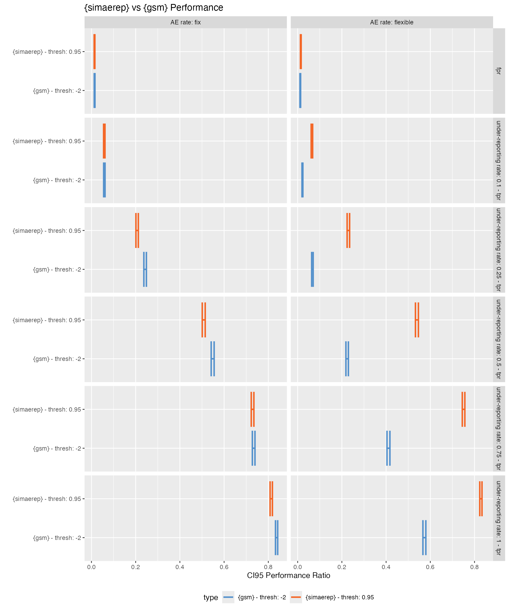

Install {gsm}
devtools::install_github("Gilead-BioStats/gsm", ref = "main")Introduction
The {gsm} R package provides a standardized Risk Based Quality Monitoring (RBQM) framework for clinical trials that pairs a flexible data pipeline with robust reports. It also uses Funnel Plots to flag outliers which provide broader tolerance limits for sites with low exposure and narrower limits for sites with higher exposure. This method is different to the event rate based limits we have used in previous heuristics to measure {simaerep} performance. Funnel plots are discussed in greater detail by Zink et al. 2018
One of the draw backs of using funnel plots for flagging is that they assume that the AE rate remains constant over the course of the study.
Prepare Data
Load Portfolio Configurations
We have prepared a snapshot of the AE reporting configuration of our current portfolio. For each study we have also measured a visit-specific AE rate which allows us to generate a synthetic portfolio with flexible AE rates across a study.
df_config <- readr::read_csv("ae_conf_20240220.csv")
df_ae_rates <- readr::read_csv("ae_rates_20240220.csv")
df_config %>%
head(25) %>%
knitr::kable()| study_id | ae_per_visit_mean | site_number | max_visit_sd | max_visit_mean | n_pat |
|---|---|---|---|---|---|
| 0001 | 0.2973806 | 4746 | 3.5355339 | 16.50000 | 2 |
| 0001 | 0.2973806 | 4747 | 0.7071068 | 27.50000 | 2 |
| 0001 | 0.2973806 | 4750 | 0.5000000 | 19.25000 | 4 |
| 0001 | 0.2973806 | 4815 | 8.3765546 | 22.16667 | 6 |
| 0001 | 0.2973806 | 4816 | 0.0000000 | 27.00000 | 1 |
| 0001 | 0.2973806 | 4817 | 0.0000000 | 31.00000 | 1 |
| 0001 | 0.2973806 | 4818 | 0.0000000 | 30.00000 | 1 |
| 0001 | 0.2973806 | 4891 | 2.3804761 | 22.00000 | 7 |
| 0001 | 0.2973806 | 4893 | 0.0000000 | 20.00000 | 2 |
| 0001 | 0.2973806 | 4932 | 1.0954451 | 26.80000 | 5 |
| 0001 | 0.2973806 | 4941 | 1.7320508 | 27.00000 | 3 |
| 0001 | 0.2973806 | 4942 | 1.4142136 | 25.00000 | 2 |
| 0001 | 0.2973806 | 4943 | 0.0000000 | 25.00000 | 1 |
| 0001 | 0.2973806 | 4966 | 0.0000000 | 18.00000 | 1 |
| 0001 | 0.2973806 | 4967 | 0.8164966 | 18.00000 | 4 |
| 0001 | 0.2973806 | 4968 | 0.0000000 | 24.00000 | 1 |
| 0001 | 0.2973806 | 4969 | 1.5275252 | 21.33333 | 3 |
| 0001 | 0.2973806 | 4984 | 1.7078251 | 30.75000 | 4 |
| 0001 | 0.2973806 | 4985 | 8.9087972 | 21.16667 | 6 |
| 0001 | 0.2973806 | 4986 | 0.5773503 | 20.33333 | 3 |
| 0001 | 0.2973806 | 4988 | 1.4142136 | 19.00000 | 2 |
| 0001 | 0.2973806 | 5079 | 2.1602469 | 23.00000 | 4 |
| 0001 | 0.2973806 | 5080 | 0.0000000 | 23.00000 | 1 |
| 0001 | 0.2973806 | 5081 | 0.0000000 | 23.00000 | 1 |
| 0001 | 0.2973806 | 5082 | 1.4142136 | 22.00000 | 2 |
| study_id | cum_visit | ae_rate | n_pat |
|---|---|---|---|
| 0001 | 1 | 0.017699 | 113 |
| 0001 | 2 | 0.088496 | 113 |
| 0001 | 3 | 0.230088 | 113 |
| 0001 | 4 | 0.223214 | 112 |
| 0001 | 5 | 0.187500 | 112 |
| 0001 | 6 | 0.196429 | 112 |
| 0001 | 7 | 0.396396 | 111 |
| 0001 | 8 | 0.207207 | 111 |
| 0001 | 9 | 0.216216 | 111 |
| 0001 | 10 | 0.315315 | 111 |
| 0001 | 11 | 0.263636 | 110 |
| 0001 | 12 | 0.318182 | 110 |
| 0001 | 13 | 0.345455 | 110 |
| 0001 | 14 | 0.379630 | 108 |
| 0001 | 15 | 0.401869 | 107 |
| 0001 | 16 | 0.485981 | 107 |
| 0001 | 17 | 0.383178 | 107 |
| 0001 | 18 | 0.396226 | 106 |
| 0001 | 19 | 0.370000 | 100 |
| 0001 | 20 | 0.439560 | 91 |
| 0001 | 21 | 0.369863 | 73 |
| 0001 | 22 | 0.370968 | 62 |
| 0001 | 23 | 0.345455 | 55 |
| 0001 | 24 | 0.446809 | 47 |
| 0001 | 25 | 0.292683 | 41 |
Simulate Portfolio
We generate two synthetic portfolios with no AE under-reporting sites. One portfolio with a fixed AE rate for all visits and another one with a flexible visit-specific AE rate.
df_portf_fix <- sim_test_data_portfolio(df_config, parallel = TRUE, progress = TRUE)
df_portf_fix %>%
head(25) %>%
knitr::kable()| study_id | ae_per_visit_mean | site_number | max_visit_sd | max_visit_mean | patnum | visit | n_ae |
|---|---|---|---|---|---|---|---|
| 0001 | 0.2973806 | 4746 | 3.535534 | 16.5 | 0001 | 1 | 2 |
| 0001 | 0.2973806 | 4746 | 3.535534 | 16.5 | 0001 | 2 | 2 |
| 0001 | 0.2973806 | 4746 | 3.535534 | 16.5 | 0001 | 3 | 2 |
| 0001 | 0.2973806 | 4746 | 3.535534 | 16.5 | 0001 | 4 | 2 |
| 0001 | 0.2973806 | 4746 | 3.535534 | 16.5 | 0001 | 5 | 2 |
| 0001 | 0.2973806 | 4746 | 3.535534 | 16.5 | 0001 | 6 | 2 |
| 0001 | 0.2973806 | 4746 | 3.535534 | 16.5 | 0001 | 7 | 4 |
| 0001 | 0.2973806 | 4746 | 3.535534 | 16.5 | 0001 | 8 | 5 |
| 0001 | 0.2973806 | 4746 | 3.535534 | 16.5 | 0001 | 9 | 6 |
| 0001 | 0.2973806 | 4746 | 3.535534 | 16.5 | 0001 | 10 | 6 |
| 0001 | 0.2973806 | 4746 | 3.535534 | 16.5 | 0001 | 11 | 6 |
| 0001 | 0.2973806 | 4746 | 3.535534 | 16.5 | 0001 | 12 | 6 |
| 0001 | 0.2973806 | 4746 | 3.535534 | 16.5 | 0001 | 13 | 8 |
| 0001 | 0.2973806 | 4746 | 3.535534 | 16.5 | 0002 | 1 | 0 |
| 0001 | 0.2973806 | 4746 | 3.535534 | 16.5 | 0002 | 2 | 0 |
| 0001 | 0.2973806 | 4746 | 3.535534 | 16.5 | 0002 | 3 | 0 |
| 0001 | 0.2973806 | 4746 | 3.535534 | 16.5 | 0002 | 4 | 0 |
| 0001 | 0.2973806 | 4746 | 3.535534 | 16.5 | 0002 | 5 | 0 |
| 0001 | 0.2973806 | 4746 | 3.535534 | 16.5 | 0002 | 6 | 0 |
| 0001 | 0.2973806 | 4746 | 3.535534 | 16.5 | 0002 | 7 | 0 |
| 0001 | 0.2973806 | 4746 | 3.535534 | 16.5 | 0002 | 8 | 0 |
| 0001 | 0.2973806 | 4746 | 3.535534 | 16.5 | 0002 | 9 | 1 |
| 0001 | 0.2973806 | 4746 | 3.535534 | 16.5 | 0002 | 10 | 1 |
| 0001 | 0.2973806 | 4746 | 3.535534 | 16.5 | 0002 | 11 | 1 |
| 0001 | 0.2973806 | 4746 | 3.535534 | 16.5 | 0002 | 12 | 1 |
df_portf_flex <- sim_test_data_portfolio(df_config, df_ae_rates = df_ae_rates, parallel = TRUE, progress = TRUE)Compare AE rates
Next we confirm the different AE rates in our two synthetic portfolios.
df_rate_fix <- df_portf_fix %>%
mutate(ae_rate = coalesce(n_ae - lag(n_ae), n_ae), .by = c("study_id", "patnum")) %>%
summarise(ae_rate = mean(ae_rate), .by = c("study_id", "visit")) %>%
mutate(rate = "fix")
df_rate_flex <- df_portf_flex %>%
mutate(ae_rate = coalesce(n_ae - lag(n_ae), n_ae), .by = c("study_id", "patnum")) %>%
summarise(ae_rate = mean(ae_rate), .by = c("study_id", "visit")) %>%
mutate(rate = "flex")
bind_rows(df_rate_flex, df_rate_fix) %>%
ggplot(aes(visit, ae_rate)) +
geom_line(aes(group = study_id), alpha = 0.2) +
geom_smooth() +
facet_wrap(~ rate) +
labs(title = "Average AE rates per Study")
bind_rows(df_rate_flex, df_rate_fix) %>%
filter(dense_rank(study_id) <= 16) %>%
ggplot(aes(visit, ae_rate)) +
geom_line(aes(group = rate, color = rate)) +
facet_wrap(~ study_id, scales = "free") +
labs(title = "Average AE rates for Selected Studies")
We can confirm that the AE rates in the “flexible” portfolio are not constant. Moreover we see that the AE rate profile is very unique for each study.
Apply {gsm}
Example
Here we demonstrate how to use the {gsm} package on our simulated portfolios.
get_SUBJ <- function(df_portf) {
df_portf %>%
select(study_id, siteid = site_number, subjid = patnum, timeonstudy = visit) %>%
summarise(timeonstudy = max(timeonstudy), .by = c(study_id, siteid, subjid)) %>%
group_by(study_id) %>%
nest()
}
get_AE <- function(df_portf) {
df_portf_fix %>%
select(study_id, subjid = patnum, n_ae) %>%
summarise(n_ae = max(n_ae), .by = c(study_id, subjid)) %>%
filter(n_ae > 0) %>%
mutate(n_ae = map(n_ae, ~ tibble(n = seq(1, .)), .progress = TRUE)) %>%
unnest(n_ae) %>%
select(- n) %>%
group_by(study_id) %>%
nest()
}
dfSUBJ_fix <- get_SUBJ(df_portf_fix)
dfAE_fix <- get_AE(df_portf_fix)
dfInput <- gsm::AE_Map_Raw(list(dfSUBJ = dfSUBJ_fix$data[[1]], dfAE = dfAE_fix$data[[1]]))
dfInput## # A tibble: 113 × 5
## SubjectID SiteID Exposure Count Rate
## <chr> <chr> <int> <int> <dbl>
## 1 0001 4746 13 8 0.615
## 2 0002 4746 20 5 0.25
## 3 0003 4747 27 10 0.370
## 4 0004 4747 26 9 0.346
## 5 0005 4750 19 7 0.368
## 6 0006 4750 19 4 0.211
## 7 0007 4750 20 3 0.15
## 8 0008 4750 19 3 0.158
## 9 0009 4815 9 4 0.444
## 10 0010 4815 32 12 0.375
## # ℹ 103 more rows
dfTransformed <- gsm::Transform_Rate(
dfInput,
strNumeratorCol = "Count",
strDenominatorCol = "Exposure"
)
dfTransformed## # A tibble: 44 × 4
## GroupID Numerator Denominator Metric
## <chr> <int> <int> <dbl>
## 1 4746 13 33 0.394
## 2 4747 19 53 0.358
## 3 4750 17 77 0.221
## 4 4815 50 147 0.340
## 5 4816 6 27 0.222
## 6 4817 13 31 0.419
## 7 4818 7 30 0.233
## 8 4891 46 146 0.315
## 9 4893 14 40 0.35
## 10 4932 42 135 0.311
## # ℹ 34 more rows
dfAnalyzed <- gsm::Analyze_NormalApprox(dfTransformed)
dfAnalyzed## # A tibble: 44 × 7
## GroupID Numerator Denominator Metric OverallMetric Factor Score
## <chr> <int> <int> <dbl> <dbl> <dbl> <dbl>
## 1 5084 2 21 0.0952 0.307 1.10 -2.00
## 2 5168 8 44 0.182 0.307 1.10 -1.71
## 3 4750 17 77 0.221 0.307 1.10 -1.56
## 4 5080 4 23 0.174 0.307 1.10 -1.32
## 5 5081 4 23 0.174 0.307 1.10 -1.32
## 6 5111 6 31 0.194 0.307 1.10 -1.30
## 7 5082 10 45 0.222 0.307 1.10 -1.17
## 8 5311 4 20 0.2 0.307 1.10 -0.987
## 9 4942 12 50 0.24 0.307 1.10 -0.976
## 10 5273 10 42 0.238 0.307 1.10 -0.920
## # ℹ 34 more rows
dfFlagged <- gsm::Flag_NormalApprox(dfAnalyzed, vThreshold = c(-3, -2, 2, 3))
dfFlagged## # A tibble: 44 × 8
## GroupID Numerator Denominator Metric OverallMetric Factor Score Flag
## <chr> <int> <int> <dbl> <dbl> <dbl> <dbl> <dbl>
## 1 5084 2 21 0.0952 0.307 1.10 -2.00 -1
## 2 5168 8 44 0.182 0.307 1.10 -1.71 0
## 3 4750 17 77 0.221 0.307 1.10 -1.56 0
## 4 5080 4 23 0.174 0.307 1.10 -1.32 0
## 5 5081 4 23 0.174 0.307 1.10 -1.32 0
## 6 5111 6 31 0.194 0.307 1.10 -1.30 0
## 7 5082 10 45 0.222 0.307 1.10 -1.17 0
## 8 5311 4 20 0.2 0.307 1.10 -0.987 0
## 9 4942 12 50 0.24 0.307 1.10 -0.976 0
## 10 5273 10 42 0.238 0.307 1.10 -0.920 0
## # ℹ 34 more rows
dfSummary <- gsm::Summarize(dfFlagged)
dfSummary## # A tibble: 44 × 6
## GroupID Numerator Denominator Metric Score Flag
## <chr> <int> <int> <dbl> <dbl> <dbl>
## 1 5084 2 21 0.0952 -2.00 -1
## 2 5308 26 61 0.426 1.93 0
## 3 4817 13 31 0.419 1.30 0
## 4 4968 10 24 0.417 1.11 0
## 5 5224 10 24 0.417 1.11 0
## 6 4943 10 25 0.4 0.965 0
## 7 4746 13 33 0.394 1.04 0
## 8 5135 7 18 0.389 0.721 0
## 9 4988 14 37 0.378 0.902 0
## 10 5166 35 93 0.376 1.39 0
## # ℹ 34 more rows
dfBounds <- gsm::Analyze_NormalApprox_PredictBounds(dfTransformed, vThreshold = c(-3, -2, 2, 3))
dfBounds## # A tibble: 1,258 × 5
## Threshold Denominator LogDenominator Numerator Metric
## <dbl> <dbl> <dbl> <dbl> <dbl>
## 1 -3 22.4 3.11 0.00938 0.000419
## 2 -3 23.2 3.14 0.123 0.00533
## 3 -3 23.9 3.17 0.239 0.0100
## 4 -3 24.6 3.20 0.356 0.0145
## 5 -3 25.4 3.23 0.475 0.0187
## 6 -3 26.1 3.26 0.596 0.0228
## 7 -3 26.8 3.29 0.718 0.0268
## 8 -3 27.6 3.32 0.841 0.0305
## 9 -3 28.3 3.34 0.966 0.0341
## 10 -3 29.0 3.37 1.09 0.0376
## # ℹ 1,248 more rows
chart <- gsm::Visualize_Scatter(dfFlagged, dfBounds)
chartSimulate UR
We write a function that removes a given ratio of AEs from one site in the data set and returns its z-score.
sim_site_ur_gsm <- function(site, ur_rate, dfTransformed) {
dfTransformed <- dfTransformed %>%
mutate(
Numerator = ifelse(GroupID == site, Numerator * (1 - ur_rate), Numerator),
Metric = Numerator / Denominator
)
gsm::Analyze_NormalApprox(dfTransformed) %>%
filter(GroupID == site) %>%
pull(Score)
}
sim_site_ur_gsm("4747", ur_rate = 0.75, dfTransformed)## [1] -2.88228We write another function that systematically applies this
sim_site_ur_gsm across all sites in all studies across a
range of under-reporting ratios.
sim_ur_gsm <- function(dfSUBJ, dfAE) {
dfSUBJ %>%
inner_join(dfAE, by = "study_id") %>%
ungroup() %>%
mutate(
trans = map2(data.x, data.y, ~ gsm::AE_Map_Raw(list(dfSUBJ = .x, dfAE = .y))),
trans = map(trans, ~ gsm::Transform_Rate(., strNumeratorCol = "Count", strDenominatorCol = "Exposure")),
sites = map(data.x, ~ distinct(., siteid))
) %>%
select(- starts_with("data.")) %>%
unnest(sites) %>%
mutate(ur = list(tibble(ur_rate = c(0, 0.1, 0.25, 0.5, 0.75, 1)))) %>%
unnest(ur) %>%
mutate(
score = pmap_dbl(list(siteid, ur_rate, trans), sim_site_ur_gsm, .progress = TRUE)
)
}
df_sim_gsm_fix <- sim_ur_gsm(dfSUBJ_fix, dfAE_fix)## Warning: There were 3095 warnings in `mutate()`.
## The first warning was:
## ℹ In argument: `z_i = ifelse(...)`.
## Caused by warning:
## ! There was 1 warning in `mutate()`.
## ℹ In argument: `z_0 = ifelse(...)`.
## Caused by warning in `sqrt()`:
## ! NaNs produced
## ℹ Run `dplyr::last_dplyr_warnings()` to see the 3094 remaining warnings.
df_sim_gsm_fix## # A tibble: 129,966 × 5
## study_id trans siteid ur_rate score
## <chr> <list> <chr> <dbl> <dbl>
## 1 0001 <tibble [44 × 4]> 4746 0 1.04
## 2 0001 <tibble [44 × 4]> 4746 0.1 0.580
## 3 0001 <tibble [44 × 4]> 4746 0.25 -0.120
## 4 0001 <tibble [44 × 4]> 4746 0.5 -1.27
## 5 0001 <tibble [44 × 4]> 4746 0.75 -2.30
## 6 0001 <tibble [44 × 4]> 4746 1 -3.18
## 7 0001 <tibble [44 × 4]> 4747 0 0.780
## 8 0001 <tibble [44 × 4]> 4747 0.1 0.253
## 9 0001 <tibble [44 × 4]> 4747 0.25 -0.544
## 10 0001 <tibble [44 × 4]> 4747 0.5 -1.80
## # ℹ 129,956 more rowsWe repeat the same steps for the portfolio with the flexible AE rates.
dfSUBJ_flex <- get_SUBJ(df_portf_flex)
dfAE_flex<- get_AE(df_portf_flex)
df_sim_gsm_flex <- sim_ur_gsm(dfSUBJ_flex, dfAE_flex)## Warning: There were 3004 warnings in `mutate()`.
## The first warning was:
## ℹ In argument: `z_i = ifelse(...)`.
## Caused by warning:
## ! There was 1 warning in `mutate()`.
## ℹ In argument: `z_0 = ifelse(...)`.
## Caused by warning in `sqrt()`:
## ! NaNs produced
## ℹ Run `dplyr::last_dplyr_warnings()` to see the 3003 remaining warnings.UR {simaerep}
We simulate under-reporting for both portfolios using {simaerep}
df_sim_simaerep_fix <- sim_ur_scenarios(
df_portf_fix,
extra_ur_sites = 0,
ur_rate = c(0, 0.1, 0.25, 0.5, 0.75, 1),
parallel = TRUE,
poisson = TRUE,
prob_lower = TRUE,
progress = TRUE
)
df_sim_simaerep_flex <- sim_ur_scenarios(
df_portf_flex,
extra_ur_sites = 0,
ur_rate = c(0, 0.1, 0.25, 0.5, 0.75, 1),
parallel = TRUE,
poisson = TRUE,
prob_lower = TRUE,
progress = TRUE
)Evaluate
Combine Results
df_sim_gsm_fix$ae_rate <- "AE rate: fix"
df_sim_gsm_flex$ae_rate <- "AE rate: flexible"
df_sim_simaerep_fix$ae_rate <- "AE rate: fix"
df_sim_simaerep_flex$ae_rate <- "AE rate: flexible"
df_sim_thresh2 <- bind_rows(df_sim_gsm_fix, df_sim_gsm_flex) %>%
mutate(
is_ur = score <= -2,
type = "{gsm} - thresh: -2",
site_number = siteid
) %>%
select(type, ae_rate, study_id, site_number, ur_rate, is_ur, score)
df_sim_simaerep_threshp95 <- bind_rows(df_sim_simaerep_fix, df_sim_simaerep_flex) %>%
mutate(
is_ur = prob_low_prob_ur >= 0.95,
type = "{simaerep} - thresh: 0.95"
) %>%
select(type, ae_rate, study_id, site_number, ur_rate, is_ur, score = prob_low_prob_ur)
df_eval <- bind_rows(
df_sim_thresh2,
df_sim_simaerep_threshp95,
)Aggregate
get_prop_test_ci95 <- function(..., ix) {
stopifnot(ix %in% c(1, 2))
tryCatch(
prop.test(...)$conf.int[ix],
error = function(cnd) c(NA, NA)[ix]
)
}
aggr_results <- function(df_eval) {
df_perf <- df_eval %>%
summarise(
n = n(),
.by = c(type, ae_rate, ur_rate, is_ur)
) %>%
pivot_wider(
names_from = is_ur,
values_from = n,
names_prefix = "is_ur_",
values_fill = 0
) %>%
mutate(
n_sites = is_ur_TRUE + is_ur_FALSE + is_ur_NA,
ratio = is_ur_TRUE / n_sites,
ratio_type = ifelse(ur_rate == 0, "fpr", "tpr"),
ci95_low = map2_dbl(is_ur_TRUE, n_sites, ~ get_prop_test_ci95(.x, .y, ix = 1)),
ci95_high = map2_dbl(is_ur_TRUE, n_sites, ~ get_prop_test_ci95(.x, .y, ix = 2))
)
}
df_perf <- aggr_results(df_eval)Results
Table
| type | ae_rate | ur_rate | is_ur_FALSE | is_ur_TRUE | is_ur_NA | n_sites | ratio | ratio_type | ci95_low | ci95_high |
|---|---|---|---|---|---|---|---|---|---|---|
| {gsm} - thresh: -2 | AE rate: fix | 0.00 | 20823 | 306 | 532 | 21661 | 0.014 | fpr | 0.013 | 0.016 |
| {gsm} - thresh: -2 | AE rate: fix | 0.10 | 19868 | 1262 | 531 | 21661 | 0.058 | tpr | 0.055 | 0.061 |
| {gsm} - thresh: -2 | AE rate: fix | 0.25 | 15878 | 5258 | 525 | 21661 | 0.243 | tpr | 0.237 | 0.249 |
| {gsm} - thresh: -2 | AE rate: fix | 0.50 | 9273 | 11876 | 512 | 21661 | 0.548 | tpr | 0.542 | 0.555 |
| {gsm} - thresh: -2 | AE rate: fix | 0.75 | 5263 | 15895 | 503 | 21661 | 0.734 | tpr | 0.728 | 0.740 |
| {gsm} - thresh: -2 | AE rate: fix | 1.00 | 3027 | 18142 | 492 | 21661 | 0.838 | tpr | 0.833 | 0.842 |
| {gsm} - thresh: -2 | AE rate: flexible | 0.00 | 20886 | 254 | 521 | 21661 | 0.012 | fpr | 0.010 | 0.013 |
| {gsm} - thresh: -2 | AE rate: flexible | 0.10 | 20677 | 465 | 519 | 21661 | 0.021 | tpr | 0.020 | 0.024 |
| {gsm} - thresh: -2 | AE rate: flexible | 0.25 | 19703 | 1444 | 514 | 21661 | 0.067 | tpr | 0.063 | 0.070 |
| {gsm} - thresh: -2 | AE rate: flexible | 0.50 | 16318 | 4848 | 495 | 21661 | 0.224 | tpr | 0.218 | 0.229 |
| {gsm} - thresh: -2 | AE rate: flexible | 0.75 | 12281 | 8896 | 484 | 21661 | 0.411 | tpr | 0.404 | 0.417 |
| {gsm} - thresh: -2 | AE rate: flexible | 1.00 | 8774 | 12416 | 471 | 21661 | 0.573 | tpr | 0.567 | 0.580 |
| {simaerep} - thresh: 0.95 | AE rate: fix | 0.00 | 21363 | 298 | 0 | 21661 | 0.014 | fpr | 0.012 | 0.015 |
| {simaerep} - thresh: 0.95 | AE rate: fix | 0.10 | 20406 | 1255 | 0 | 21661 | 0.058 | tpr | 0.055 | 0.061 |
| {simaerep} - thresh: 0.95 | AE rate: fix | 0.25 | 17187 | 4474 | 0 | 21661 | 0.207 | tpr | 0.201 | 0.212 |
| {simaerep} - thresh: 0.95 | AE rate: fix | 0.50 | 10660 | 11001 | 0 | 21661 | 0.508 | tpr | 0.501 | 0.515 |
| {simaerep} - thresh: 0.95 | AE rate: fix | 0.75 | 5874 | 15787 | 0 | 21661 | 0.729 | tpr | 0.723 | 0.735 |
| {simaerep} - thresh: 0.95 | AE rate: fix | 1.00 | 4043 | 17618 | 0 | 21661 | 0.813 | tpr | 0.808 | 0.819 |
| {simaerep} - thresh: 0.95 | AE rate: flexible | 0.00 | 21356 | 305 | 0 | 21661 | 0.014 | fpr | 0.013 | 0.016 |
| {simaerep} - thresh: 0.95 | AE rate: flexible | 0.10 | 20267 | 1394 | 0 | 21661 | 0.064 | tpr | 0.061 | 0.068 |
| {simaerep} - thresh: 0.95 | AE rate: flexible | 0.25 | 16694 | 4967 | 0 | 21661 | 0.229 | tpr | 0.224 | 0.235 |
| {simaerep} - thresh: 0.95 | AE rate: flexible | 0.50 | 9975 | 11686 | 0 | 21661 | 0.539 | tpr | 0.533 | 0.546 |
| {simaerep} - thresh: 0.95 | AE rate: flexible | 0.75 | 5404 | 16257 | 0 | 21661 | 0.751 | tpr | 0.745 | 0.756 |
| {simaerep} - thresh: 0.95 | AE rate: flexible | 1.00 | 3707 | 17954 | 0 | 21661 | 0.829 | tpr | 0.824 | 0.834 |
Plot Performance Metrics
- {gsm} has better performance than {simaerep} when the AE rate is fixed, while {simaerep} greatly outperforms {gsm} when the AE rate is flexible and mimics the AE rates encountered in real study data sets.
plot_perf <- function(df_perf) {
df_perf %>%
mutate(ur_rate = paste0("under-reporting rate: ", ur_rate, " - ", ratio_type),
ur_rate = ifelse(str_detect(ur_rate, "fpr"), "fpr", ur_rate)) %>%
group_by(ur_rate) %>%
ggplot(aes(type, ratio)) +
geom_errorbar(aes(ymin = ci95_low, ymax = ci95_high, color = type), linewidth = 1) +
facet_grid(ur_rate ~ ae_rate) +
coord_flip() +
theme(legend.position = "bottom") +
labs(
x = "",
y = "CI95 Performance Ratio",
title = "{simaerep} vs {gsm} Performance"
) +
scale_color_manual(values = c("#5491CC", "#F46626"))
}
plot_perf(df_perf)
plan(sequential)